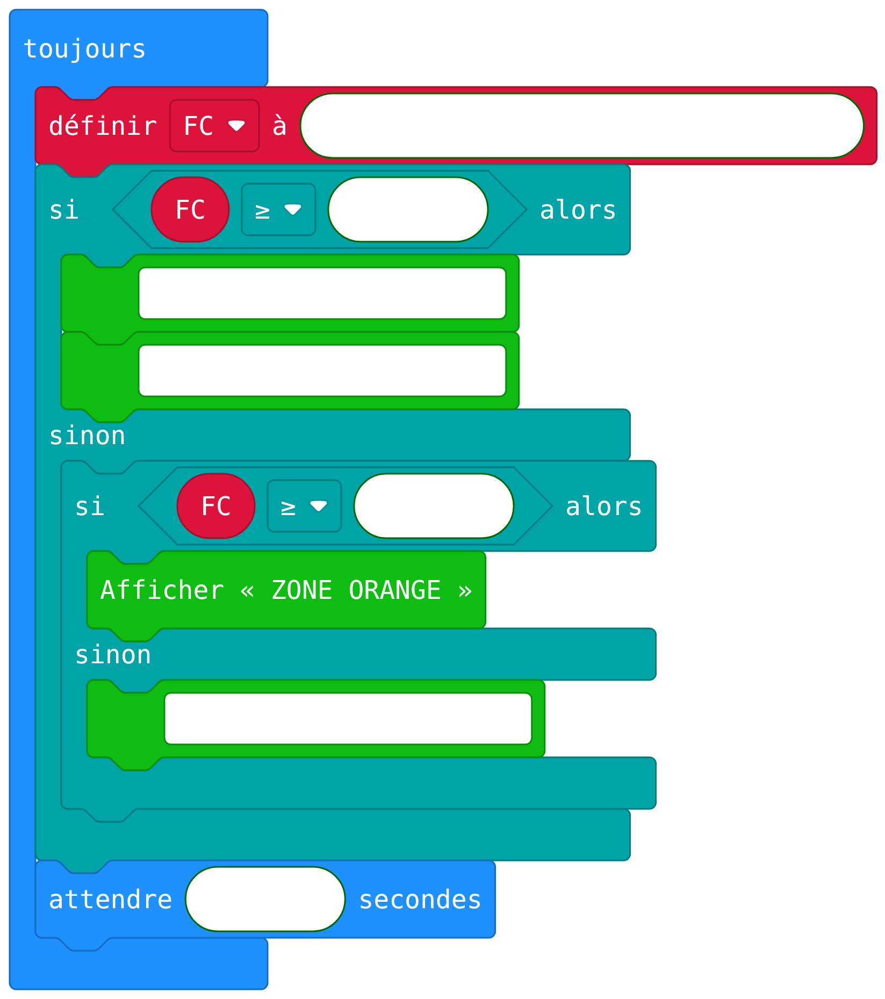
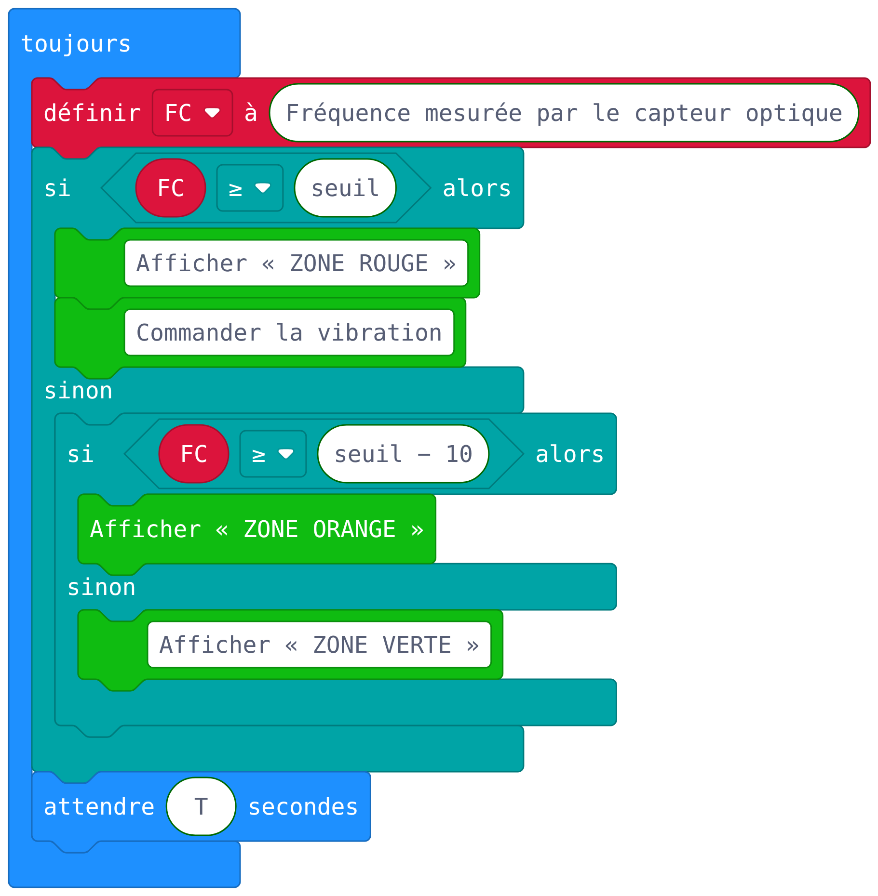

Sujet d'entraînement 1 · 2 h 30 · sans calculatrice
La montre connectée du coureur
Une coureuse prépare un ultra-trail de 20 heures avec une montre qui mesure sa fréquence cardiaque, enregistre son parcours et l'alerte par vibration. Les données sont envoyées au téléphone, puis aux serveurs du fabricant. Données techniques fictives et simplifiées.
Ce que le sujet travaille
Données personnelles, cycle de vie, capteurs complémentaires, chaînes, échantillonnage et cas le plus défavorable, autonomie, mémoire d'un état.
Les questions qui départagent
Q7 et Q11 (garantir un délai, prouver qu'un réglage convient), Q9 (programme par blocs : ordre des tests), Q18 (dernière suite), Q19 (boucles imbriquées et optimisation).
Partie A · Étude de l'objet technique
Document 1 · Constituants. Capteur optique au dos (fréquence cardiaque, en bpm) ; accéléromètre ; récepteur GNSS ; microcontrôleur ; mémoire flash ; écran ; module Bluetooth ; transistor de commande ; vibreur (moteur et masse excentrée) ; batterie lithium-ion de 400 mA·h.
Q1
Évolutions technologiques
Analyse de système★☆☆
Par comparaison avec un chronomètre de sport des années 1990, citer deux évolutions technologiques qui ont rendu possible la montre connectée.
Voir la correction
Deux parmi : miniaturisation de l'électronique (microcontrôleur, mémoire flash) ; récepteur GNSS miniaturisé ; capteur optique de fréquence cardiaque ; communication sans fil à basse consommation ; batteries lithium-ion ; écrans à faible consommation.
Q2
Partager ses séances
ArgumentationRaisonnement★★☆
Document 2. La coureuse publie automatiquement chaque séance sur un réseau social sportif : trace GNSS, date, heure de départ, fréquence cardiaque. Elle s'entraîne presque tous les jours.
Indiquer un avantage du partage. Expliquer ce qu'une personne malveillante pourrait déduire de plusieurs semaines de séances. Proposer deux réglages qui réduisent ces risques sans supprimer l'enregistrement.
Exigence. Déduire une information qui n'est écrite nulle part en croisant plusieurs séances.
Voir la correction
Avantage : suivre ses progrès, se comparer, partager avec son entraîneur. Déductions : le point de départ commun révèle le domicile ; les horaires révèlent quand le domicile est vide ; la fréquence cardiaque est une donnée de santé, donc sensible. Réglages : masquer le début et la fin de chaque trace, publier en privé ou pour les amis seulement, publier avec plusieurs jours de décalage, ne pas partager la fréquence cardiaque, garder les données sur le téléphone.
Q3
Cycle de vie : réparer ou remplacer ?
ModélisationArgumentation★★☆
Document 3. Montre A, sur 3 ans : fabrication 32 kg de CO2 (dont batterie 4), transport 2, utilisation 4, fin de vie 2 ; total 40. Sa batterie est collée : la montre est remplacée après 3 ans. La montre B, identique, a une batterie remplaçable et dure 6 ans avec un changement de batterie. L'utilisation est proportionnelle à la durée.
Indiquer l'étape qui pèse le plus et sa part. Comparer les émissions par année de A (3 ans) et de B (6 ans). Conclure et proposer deux choix de conception.
Voir la correction
La fabrication : 32 sur 40, soit 80 %. Montre A : 40 / 3 ≈ 13,3 kg par an. Montre B : 32 + 2 + 8 + 2 + 4 = 48 kg sur 6 ans, soit 8 kg par an. Allonger la durée de vie est le levier le plus efficace, car l'impact de fabrication se répartit sur plus d'années. Choix : batterie remplaçable, boîtier vissé, pièces détachées, mises à jour logicielles longues, matériaux recyclables.
Q4
Interacteurs
Analyse de système★☆☆
Compléter un tableau d'au moins quatre interacteurs (en plus de la coureuse) : catégorie et échange ou contrainte.
Voir la correction
Téléphone (objet, reçoit les données) ; satellites GNSS (objet, signaux de position) ; chargeur (objet, énergie) ; données de séance (données, stockées sur des serveurs) ; pluie, sueur, poussière (environnement, étanchéité) ; froid et chocs (environnement, résistance, baisse de capacité de la batterie).
Q5
Choisir et combiner les capteurs
Analyse de systèmeRaisonnement★★★
Document 4. Capteur optique (bon en course régulière, erreurs lors de mouvements brusques) ; ceinture thoracique (très précise, accessoire à porter) ; accéléromètre (pas, distance à 5 % près si la longueur du pas est connue, ne donne pas la position) ; GNSS (position à 5 m près, forte consommation, ne fonctionne pas en intérieur).
Justifier la présence du GNSS et de l'accéléromètre. Expliquer comment les sorties en extérieur rendent plus précise la distance sur tapis. Choisir le capteur cardiaque pour des sprints.
Exigence. Imaginer un étalonnage : utiliser un capteur précis pour régler un capteur moins précis.
Voir la correction
Le GNSS donne la distance dehors mais pas en salle ; l'accéléromètre fonctionne partout mais estime seulement. En extérieur, la montre divise la distance GNSS par le nombre de pas : elle connaît la longueur moyenne du pas. Sur le tapis, elle multiplie le nombre de pas par cette longueur. Pour des sprints, la ceinture thoracique, car le capteur optique se trompe lors des mouvements brusques.
Q6
Chaînes d'information et d'énergie
Analyse de système★★☆
Compléter les chaînes de la fonction « alerter par une vibration et enregistrer la séance ». Préciser les énergies, le rôle du transistor, et discuter : « Sans téléphone, la montre ne peut pas alerter. »
Voir la correction
| Acquérir | Traiter | Stocker | Communiquer |
|---|
| Capteur optique | Microcontrôleur | Mémoire flash | Écran ; module Bluetooth |
| Alimenter | Distribuer | Convertir | Transmettre |
|---|
| Batterie | Transistor | Moteur (électrique → mécanique) | Masse excentrée |
La sortie du microcontrôleur délivre un ordre de très faible puissance : le transistor laisse passer le courant de la batterie vers le moteur. L'affirmation est fausse : capteur, programme et vibreur sont dans la montre.
Document 5 · Mesure et exigences. Mesure toutes les T secondes (T = 5, 10 ou 30 s). Une mesure ≥ seuil commande une vibration qui démarre au plus tard 2 s après. E1 : tout dépassement d'au moins 12 s provoque une vibration. E2 : la vibration démarre au plus tard 12 s après le début du dépassement. E3 : tenir 20 h en gardant au moins 20 % de la batterie.
Q7
Garantir la détection
RaisonnementModélisation★★★
Avec T = 30 s, un dépassement dure de 8 s à 24 s : représenter et conclure. Montrer qu'avec T = 10 s tout dépassement d'au moins 12 s respecte E1 et E2. Quels réglages conviennent ?
Exigence. Un exemple favorable ne prouve rien : il faut raisonner sur un début quelconque et choisir le pire.
Voir la correction
T = 30 s : mesures à 0 et 30 s, aucune pendant le dépassement : ni E1 ni E2. T = 10 s : au pire, le dépassement commence juste après une mesure ; la suivante arrive moins de 10 s plus tard, pendant le dépassement (qui dure au moins 12 s). La vibration commence avant 10 + 2 = 12 s. Même raisonnement pour 5 s. Réglages : 5 s et 10 s.
Q8
Autonomie et choix du réglage
ModélisationAlgorithmique★★☆
Document 6.fonction consommation(T, duree) // T en s, duree en h, résultat en mA·h
fond ← 12 × duree
nombre ← (3600 / T) × duree
renvoyer fond + nombre / 100
Calculer la consommation pour 5, 10 et 30 s sur 20 h. Écrire reglage_possible(T, duree, capacite) puis meilleur_reglage(duree, capacite) (plus petit T compatible, ou 0).
Voir la correction
384, 312 et 264 mA·h. Utilisable : 0,8 × 400 = 320 mA·h, donc 10 s et 30 s respectent E3.
fonction reglage_possible(T, duree, capacite)
renvoyer consommation(T, duree) ≤ 0.8 × capacite
fonction meilleur_reglage(duree, capacite)
si reglage_possible(5, duree, capacite) alors renvoyer 5
si reglage_possible(10, duree, capacite) alors renvoyer 10
si reglage_possible(30, duree, capacite) alors renvoyer 30
renvoyer 0
On teste dans l'ordre croissant car un T plus petit détecte mieux. meilleur_reglage(20, 400) = 10.
Document 7 · Affichage de la zone cardiaque. Rouge si la fréquence cardiaque atteint le seuil (avec vibration), orange si elle est à moins de 10 bpm du seuil, verte sinon. Programme MakeCode exécuté en boucle.

Q9
Programme par blocs : la zone cardiaque
AlgorithmiqueRaisonnement★★☆
Compléter le programme avec les propositions : Commander la vibration, T, Afficher « ZONE VERTE », seuil − 10, Fréquence mesurée par le capteur optique, Afficher « ZONE ROUGE », seuil. Expliquer pourquoi « FC ≥ seuil » doit être testé avant « FC ≥ seuil − 10 », puis ce que fait le programme pendant un long dépassement.
Ce qu'il faut savoir. Lire un programme par blocs comme au sujet zéro ; dans une suite de « si … sinon si », tester d'abord la condition la plus restrictive.
Exigence. Au-delà du remplissage, comprendre pourquoi l'ordre des tests change le résultat et repérer le défaut qui justifie le programme suivant.
Voir la correction

Si l'on teste d'abord « FC ≥ seuil − 10 », toute fréquence qui atteint le seuil passe ce test : la zone rouge et la vibration ne sont jamais atteintes. Pendant un long dépassement, la montre vibre à chaque mesure, toutes les T secondes : c'est ce que corrige le programme du document 8, qui mémorise qu'une alerte a déjà été donnée.
Document 8 · Programme d'alerte (au démarrage, alerte_active ← FAUX) et essai avec T = 10 s, seuil 150 bpm : mesures 145, 152, 148, 153, 155, 151, 147.
si mesure ≥ seuil alors
si alerte_active = FAUX alors
commander la vibration
alerte_active ← VRAI
sinon
alerte_active ← FAUX
Q10
Exécuter un programme à mémoire
AlgorithmiqueTests★★☆
Exécuter le programme sur l'essai, expliquer le rôle de alerte_active et la faiblesse face à une mesure fausse isolée.
Voir la correction
| Instant (s) | 0 | 10 | 20 | 30 | 40 | 50 | 60 |
|---|
| alerte_active | FAUX | VRAI | FAUX | VRAI | VRAI | VRAI | FAUX |
|---|
| Vibration | non | oui | non | oui | non | non | non |
|---|
La variable retient qu'une alerte a déjà été donnée depuis la dernière mesure basse. Une seule mesure élevée suffit à vibrer : une mesure fausse (mouvement du bras) donne une fausse alerte, comme à 10 s.
Q11
Confirmer par deux mesures : conséquences en chaîne
AlgorithmiqueRaisonnementModélisation★★★
Ne vibrer qu'après deux mesures consécutives ≥ seuil. Modifier le programme et le tester ; trouver les réglages qui respectent encore E1 et E2 ; en déduire si la batterie de 400 mA·h suffit, sinon la capacité minimale.
Exigence. Une amélioration logicielle a des conséquences sur le réglage, puis sur le matériel : il faut suivre toute la chaîne de conséquences.
Voir la correction
// au démarrage : compteur ← 0 ; alerte_active ← FAUX
si mesure ≥ seuil alors
compteur ← compteur + 1
si compteur ≥ 2 et alerte_active = FAUX alors
commander la vibration
alerte_active ← VRAI
sinon
compteur ← 0
alerte_active ← FAUX
Compteur : 0, 1, 0, 1, 2, 3, 0 ; une seule vibration, à 40 s. Au pire, deux mesures arrivent moins de 2T après le début : il faut 2T + 2 ≤ 12, donc T ≤ 5 s. Contre-exemple pour 10 s : un dépassement de 1 s à 13 s ne contient qu'une mesure. Or T = 5 s consomme 384 mA·h, plus que 320 : il faut 0,8 × C ≥ 384, soit C ≥ 480 mA·h.
Partie B · Algorithmique : analyser un parcours
Modèle. Une position est relevée toutes les 10 s. Un parcours est une liste P de couples (x, y) en mètres ; (x, y) ← P[i]. On dispose de racine(a). Jeu d'essai : P = [(0, 0), (30, 40), (30, 100), (90, 100), (90, 100), (90, 180), (30, 100), (0, 60)]. Le parc est le rectangle (0, 50, 100, 150), bords inclus.
Q12
Distances à la main
Modélisation★☆☆
Montrer que la distance entre P[1] et P[2] vaut 50 m ; calculer la longueur totale.
Voir la correction
racine(30² + 40²) = racine(2 500) = 50. Intervalles : 50, 60, 60, 0, 80, 100, 50. Total : 400 m.
Q13 · Q14
distance et distance_totale
AlgorithmiqueCas limites★☆☆
Voir la correction
fonction distance(x1, y1, x2, y2)
renvoyer racine((x2 − x1) × (x2 − x1) + (y2 − y1) × (y2 − y1))
fonction distance_totale(P)
total ← 0
pour i allant de 2 à longueur(P) faire
(x1, y1) ← P[i − 1]
(x2, y2) ← P[i]
total ← total + distance(x1, y1, x2, y2)
renvoyer total
Avec 0 ou 1 relevé, la boucle ne s'exécute pas : le résultat est 0.
Q15
Durée d'arrêt
AlgorithmiqueAnalyse★★☆
Écrire duree_arret(P, dmin) : durée totale des intervalles où la coureuse a parcouru strictement moins de dmin. Pourquoi dmin = 5 et non 0 ?
Voir la correction
fonction duree_arret(P, dmin)
duree ← 0
pour i allant de 2 à longueur(P) faire
(x1, y1) ← P[i − 1]
(x2, y2) ← P[i]
si distance(x1, y1, x2, y2) < dmin alors
duree ← duree + 10
renvoyer duree
Résultat : 10 s. Le GNSS a une précision d'environ 5 m : à l'arrêt, la position mesurée bouge. Avec dmin = 0, aucun arrêt ne serait détecté.
Q16 · Q17
Dans le parc, entrées dans le parc
Algorithmique★★☆
Écrire dans_parc(x, y, xg, yb, xd, yh), puis nombre_entrees(P, …) : relevés dans le parc dont le précédent est dehors.
Voir la correction
fonction dans_parc(x, y, xg, yb, xd, yh)
renvoyer xg ≤ x et x ≤ xd et yb ≤ y et y ≤ yh
fonction nombre_entrees(P, xg, yb, xd, yh)
n ← 0
pour i allant de 2 à longueur(P) faire
(x1, y1) ← P[i − 1]
(x2, y2) ← P[i]
si dans_parc(x2, y2, xg, yb, xd, yh) et dans_parc(x1, y1, xg, yb, xd, yh) = FAUX alors
n ← n + 1
renvoyer n
Relevés dans le parc : 3, 4, 5, 7, 8 (le 8 est sur le bord). Entrées : 2.
Q18
Plus longue présence dans le parc
AlgorithmiqueCas limites★★★
Voir la correction
fonction plus_longue_presence(P, xg, yb, xd, yh)
courant ← 0
maximum ← 0
pour i allant de 1 à longueur(P) faire
(x, y) ← P[i]
si dans_parc(x, y, xg, yb, xd, yh) alors
courant ← courant + 1
si courant > maximum alors
maximum ← courant
sinon
courant ← 0
renvoyer maximum
Résultat : 3. Mettre à jour le maximum à chaque relevé dans le parc traite la suite qui finit au dernier relevé.
Q19
Meilleur temps sur une distance
AlgorithmiqueRaisonnement★★★
Trouver la plus courte durée entre deux relevés P[i] et P[j] (i < j) telle que la distance parcourue entre eux atteigne D. Calcul à la main pour D = 150 m, fonction meilleur_temps(P, D) (−1 si impossible), puis amélioration pour 7 201 relevés.
Voir la correction
Cumuls : 0, 50, 110, 170, 170, 250, 350, 400. Aucun intervalle seul n'atteint 150 m ; de P[5] à P[7] : 180 m en 20 s. Résultat : 20 s.
fonction meilleur_temps(P, D)
meilleur ← −1
pour i allant de 1 à longueur(P) − 1 faire
cumul ← 0
j ← i
tant que j < longueur(P) et cumul < D faire
(x1, y1) ← P[j]
(x2, y2) ← P[j + 1]
cumul ← cumul + distance(x1, y1, x2, y2)
j ← j + 1
si cumul ≥ D alors
temps ← (j − i) × 10
si meilleur = −1 ou temps < meilleur alors
meilleur ← temps
renvoyer meilleur
Amélioration : calculer une seule fois la liste C des distances cumulées ; la distance de P[i] à P[j] vaut C[j] − C[i]. Très bon candidat : remarquer que j n'a jamais besoin de reculer quand i avance.